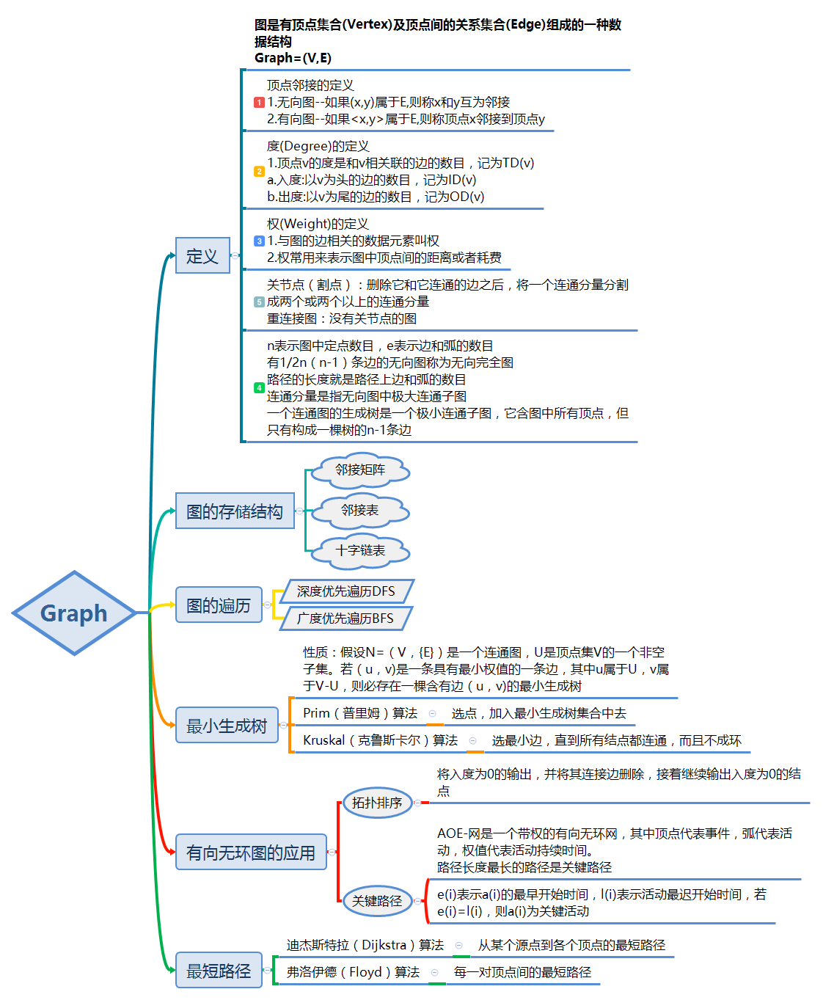

Graph & 查找 & 排序
第六章 图

拓扑排序算法描述：
- 把邻接表中入度为0的顶点依此进栈
- 若栈不空，则
- 栈顶元素vj退栈并输出；
- 在邻接表中查找vj的直接后继vk，把vk的入度减1；若vk的入度为0则进栈
- 若栈空时输出的顶点个数不是n，则有向图有环；否则，拓扑排序完毕。
所谓的线索化，就是按其要求的遍历顺序确定每个结点的前驱和后继，其中有左子节点的不用画前驱
第七章 查找
顺序查找、折半查找、索引查找、分块查找是静态查找，动态查找有二叉排序树查找，最优二叉树查找，键树查找，哈希表查找
静态查找表
顺序表的顺序查找：应用范围：顺序表或线性链表表示的表，表内元素之间无序。查找过程：从表的一端开始逐个进行记录的关键字和给定值的比较。
顺序有序表的二分查找。平均查找时间(n+1)/n log2(n+1)
分块查找：将表分成几块，块内无序，块间有序，即前一块中的最大值小于后一块中的最小值。并且有一张索引表，每一项存放每一块的最大值和指向该块第一个元素的指针。索引表有序，块内无序。所以，块间查找用二分查找，块内用顺序查找，效率介于顺序和二分之间；先确定待查记录所在块，再在块内查找。因此跟表中元素个数和块中元素个数都有关。
- 用数组存放待查记录,
- 建立索引表，由每块中最大（小）的关键字及所属块位置的信息组成。
- 当索引表较大时，可以采用二分查找
- 在数据量极大时，索引可能很多，可考虑建立索引表的索引，即二级索引，原则上索引不超过三级
分块查找平均查找长度：ASL**bs = L**b + L**w。其中，L**b是查找索引表确定所在块的平均查找长度， L**w是在块中查找元素的平均查找长度。在n一定时，可以通过选择s使ASL尽可能小。当s=sqrt(n)时，ASL最小。
- 时间：顺序查找最差，二分最好，分块介于两者之间
- 空间：分块最大，需要增加索引数据的空间
- 顺序查找对表没有特殊要求
- 分块时数据块之间在物理上可不连续。所以可以达到插入、删除数据只涉及对应的块；另外，增加了索引的维护。
- 二分查找要求表有序，所以若表的元素的插入与删除很频繁，维持表有序的工作量极大。
- 在表不大时，一般直接使用顺序查找。
动态查找
二叉排序树的结点删除：
- x为叶子结点，则直接删除
- x只有左子树xL或只有右子树xR ,则令xL或xR直接成为双亲结点f的子树；
- x即有左子树xL也有右子树xR，在xL中选值最大的代替x，该数据按二叉排序树的性质应在最右边。
平衡二叉树：每个结点的平衡因子都为 1、－1、0 的二叉排序树。或者说每个结点的左右子树的高度最多差1的二叉排序树。
平衡二叉树的平衡：
- 左调整(新结点插入在左子树上的调整)：
- LL(插入在结点左子树的左子树上)：旋转前后高度都为h+1
- LR(新插入结点在左子树的右子树上)：旋转前后高度仍为h+1
- 右调整(新结点插入在右子树上进行的调整):
- RR(插入在的右子树的右子树上)：处理方法和 LL对称
- RL(插入在的右子树的左子树上)：处理方法和 LR对称
平衡树建立方法：
- 按二叉排序树插入结点
- 如引起结点平衡因子变为|2|，则确定旋转点，该点是离根最远（或最接近于叶子的点）
- 确定平衡类型后进行平衡处理，平衡后以平衡点为根的子树高不变
- 最小二叉平衡树的节点的公式如下 F(n)=F(n-1)+F(n-2)+1 这个类似于一个递归的数列，可以参考Fibonacci数列，1是根节点，F(n-1)是左子树的节点数量，F(n-2)是右子树的节点数量。
常见的平衡二叉树：
红黑树是平衡二叉树，也就是左右子树是平衡的，高度大概相等。这种情况等价于一块完全二叉树的高度，查找的时间复杂度是树的高度，为logn，插入操作的平均时间复杂度为O(logn)，最坏时间复杂度为O(logn)

- 节点是红色或黑色。
- 根是黑色。
- 所有叶子都是黑色（叶子是NIL节点）。
- 每个红色节点的两个子节点都是黑色。(从每个叶子到根的所有路径上不能有两个连续的红色节点)
- 从任一节点到其每个叶子的所有简单路径 都包含相同数目的黑色节点。
avl树也是自平衡二叉树；红黑树和AVL树查找、插入、删除的时间复杂度相同；包含n个内部结点的红黑树的高度是o(logn); TreeMap 是一个红黑树的实现，能保证插入的值保证排序
STL和linux多使用红黑树作为平衡树的实现：
- 如果插入一个node引起了树的不平衡，AVL和RB-Tree都是最多只需要2次旋转操作，即两者都是O(1)；但是在删除node引起树的不平衡时，最坏情况下，AVL需要维护从被删node到root这条路径上所有node的平衡性，因此需要旋转的量级O(logN)，而RB-Tree最多只需3次旋转，只需要O(1)的复杂度。
- 其次，AVL的结构相较RB-Tree来说更为平衡，在插入和删除node更容易引起Tree的unbalance，因此在大量数据需要插入或者删除时，AVL需要rebalance的频率会更高。因此，RB-Tree在需要大量插入和删除node的场景下，效率更高。自然，由于AVL高度平衡，因此AVL的search效率更高。
- map的实现只是折衷了两者在search、insert以及delete下的效率。总体来说，RB-tree的统计性能是高于AVL的。
查找总结
- 既希望较快的查找又便于线性表动态变化的查找方法是哈希法查找。二叉排序树查找，最优二叉树查找，键树查找，哈希法查找是动态查找。分块、顺序、折半、索引顺序查找均为静态。分块法应该是将整个线性表分成若干块进行保存，若动态变化则可以添加在表的尾部（非顺序结构），时间复杂度是O(1)，查找复杂度为O(n)；若每个表内部为顺序结构，则可用二分法将查找时间复杂度降至O(logn)，但同时动态变化复杂度则变成O(n)；顺序法是挨个查找，这种方法最容易实现，不过查找时间复杂度都是O(n)，动态变化时可将保存值放入线性表尾部，则时间复杂度为O(1)；二分法是基于顺序表的一种查找方式，时间复杂度为O(logn)；通过哈希函数将值转化成存放该值的目标地址，O（1）
- 二叉树的平均查找长度为O(log2n)——O(n).二叉排序树的查找效率与二叉树的高度有关，高度越低，查找效率越高。二叉树的查找成功的平均查找长度ASL不超过二叉树的高度。二叉树的高度与二叉树的形态有关，n个节点的完全二叉树高度最小，高度为[log2n]+1,n个节点的单只二叉树的高度最大，高度为n，此时查找成功的ASL为最大(n+1)/2，因此二叉树的高度范围为[log2n]+1——n.
- 链式存储不能随机访问，必须是顺序存储
第八章 排序
- 内部排序：全部数据可同时放入内存进行的排序。
- 外部排序：文件中数据太多，无法全部调入内存进行的排序。
插入类：
- 直接插入排序。最坏情况是数据递减序，数据比较和移动量最大，达到O(n2)，最好是数据是递增序，比较和移动最少为O(n)。趟数是固定的n-1，即使有序，也要依次从第二个元素开始。排序趟数不等于时间复杂度。
- 折半插入排序 。由于插入第i个元素到r[1]到r[i-1]之间时，前i个数据是有序的，所以可以用折半查找确定插入位置，然后插入。
- 希尔排序。缩小增量排序。5-3-1。在实际应用中，步长的选取可简化为开始为表长n的一半（n/2），以后每次减半，最后为1。插入的改进，最后一趟已基本有序，比较次数和移动次数相比直接插入最后一趟更少
交换类：
冒泡排序。O(n
2
)通常认为冒泡是比较差的，可以加些改进，比如在一趟中无数据的交换，则结束等措施。
- 在数据已基本有序时，冒泡是一个较好的方法
- 在数据量较少时（15个左右）可以用冒泡
- 快速排序。
- 时间复杂度。最好情况：每次支点总在中间，O(nlog2n)，平均O(nlog2n)。最坏，数据已是递增或递减，O(n2)。pivotkey的选择越靠近中央，即左右两个子序列长度越接近，排序速度越快。越无序越快。
- 空间复杂度。需栈空间以实现递归，最坏情况：S(n)=O(n)；一般情况：S(n)=O(log2n)
- 在序列已是有序的情况下，时间复杂度最高。原因：支点选择不当。改进：随机选取支点或最左、最右、中间三个元素中的值处于中间的作为支点，通常可以避免最坏情况。所以，快速排序在表已基本有序的情况下不合适。
- 在序列长度已较短时，采用直接插入排序、起泡排序等排序方法。序列的个数通常取10左右。
选择类排序：
- 简单选择排序。O(n2)。总比较次数n(n-1)/2。
- 堆排序。建堆 O(n)，筛选排序O(nlogn)。找出若干个数中最大/最小的前K个数，用堆排序是最好。小根堆中最大的数一定是放在叶子节点上，堆本身是个完全二叉树，完全二叉树的叶子节点的位置大于[n/2]。时间复杂度不会因为待排序序列的有序程度而改变，但是待排序序列的有序程度会影响比较次数。
- 归并排序。时间：与表长成正比，若一个表表长是m，另一个是n，则时间是O(m+n)。单独一个数组归并，时间：O(nlogn)，空间：O(n)，比较次数介于(nlogn)/2和(nlogn)-n+1，赋值操作的次数是(2nlogn)。归并排序算法比较占用内存，但却是效率高且稳定的排序算法。在外排序中使用。归并的趟数是logn。
- 基数排序。在一般情况下，每个结点有 d 位关键字，必须执行 t = d次分配和收集操作。分配的代价：O(n)；收集的代价：O(rd) （rd是基数）；总的代价为：O( d ×(n + rd))。适用于以数字和字符串为关键字的情况。
- 枚举排序，通常也被叫做秩排序，比较计数排序。对每一个要排序的元素，统计小于它的所有元素的个数，从而得到该元素在整个序列中的位置，时间复杂度为O(n2)
比较法分类的下界：O(nlogn)
排序算法的一些特点：
- 堆排序、冒泡排序、快速排序在每趟排序过程中,都会有一个元素被放置在其最终的位置上。
- 有字符序列 ｛Q,H,C,Y,P,A,M,S,R,D,F,X｝ ,新序列{F,H,C,D,P,A,M,Q,R,S,Y,X}，是快速排序算法一趟扫描的结果。(拿Q作为分割点,快速排序一轮。二路归并，第一趟排序，得到 n / 2 个长度为 2 的各自有序的子序列，第二趟排序，得到 n / 4 个长度为 4 的各自有序的子序列H Q C Y A P M S D R F X。如果是快速排序的话，第一个元素t将会被放到一个最准确的位置，t前的数均小于t，后面的数均大于t。希尔排序每个小分组内将会是有序的。堆排序，把它构成一颗二叉树的时候，该堆要么就是大根堆，要么就是小根堆，第一趟Y排在最后；冒泡，那么肯定会有数据下沉的动作，第一趟有A在第一位。)
- 在文件”局部有序”或文件长度较小的情况下,最佳内部排序的方法是直接插入排序。（归并排序要求待排序列已经部分有序，而部分有序的含义是待排序列由若干有序的子序列组成，即每个子序列必须有序，并且其时间复杂度为O(nlog2n)；直接插入排序在待排序列基本有序时，每趟的比较次数大为降低，即n-1趟比较的时间复杂度由O(n^2)降至O(n)。在待排序的元素序列基本有序或者每个元素距其最终位置不远也可用插入排序，效率最高的排序方法是插入排序）
- 排序趟数与序列的原始状态有关的排序方法是优化冒泡和快速排序法。(插入排序和选择排序不管序列的原始状态是什么都要执行n-1趟，优化冒泡和快排不一定。仔细理解
排序的次数和比较次数的区别) - 不稳定的排序方法：快排，堆排，希尔，选择
- 要与关键字的初始排列次序无关,那么就是最好、最坏、一般的情况下排序时间复杂度不变, 总共有堆排序,归并排序,选择排序,基数排序
- 快速排序、Shell 排序、归并排序、直接插入排序的关键码比较次数与记录的初始排列有关。折半插入排序、选择排序无关。(直接插入排序在完全有序的情况下每个元素只需要与他左边的元素比较一次就可以确定他最终的位置；折半插入排序，比较次数是固定的，与初始排序无关；快速排序，初始排序不影响每次划分时的比较次数，都要比较n次，但是初始排序会影响划分次数，所以会影响总的比较次数，但快排平均比较次数最小；归并排序在归并的时候，如果右路最小值比左路最大值还大，那么只需要比较n次，如果右路每个元素分别比左路对应位置的元素大，那么需要比较2*n-1次，所以与初始排序有关)
- 精俭排序，即一对数字不进行两次和两次以上的比较，插入和归并是“精俭排序”。插入排序，前面是有序的，后面的每一个元素与前面有序的元素比较，比较过的就是有序的了，不会再比较一次。归并每次合并后，内部都是有序的，内部的元素之间不用再比较。选择排序，每次在后面的元素中找到最小的，找最小元素的过程是在没有排好序的那部分进行，所有肯定会比较多次。堆排序也需比较多次。